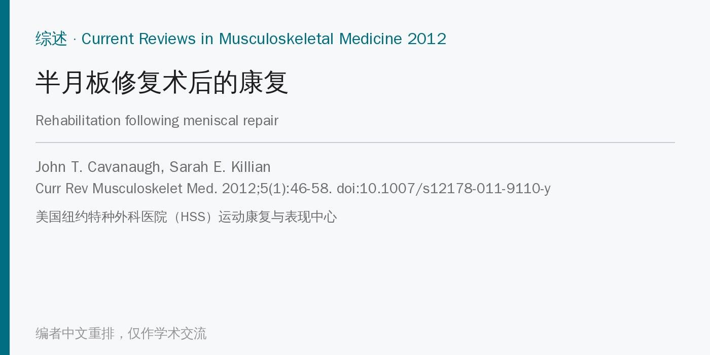
🔖原文信息（编者中文重排）
📚 文献信息
▪ Cavanaugh JT, Killian SE. Rehabilitation following meniscal repair. Curr Rev Musculoskelet Med. 2012;5(1):46-58. doi:10.1007/s12178-011-9110-y
▪ 中文题目：半月板修复术后的康复
▪ 作者来自美国纽约特种外科医院（HSS）运动康复与表现中心，通讯作者 John T. Cavanaugh
▪ 文章类型：叙述性综述，附作者所在机构的三阶段康复指南；作者声明无利益冲突
• 半月板损伤是运动员最常见的膝关节手术指征之一；有研究报告男性每年每万人 9.0 例、女性 4.2 例，多见于 20～50 岁
• 切掉半月板会加速软骨退变，切得越多退变越重；体外研究中切除 16%～34% 的半月板，接触应力增加 350%
• 因此现在的原则是尽量少切、能修就修；修复后的康复要比部分切除更保守，给修复处留出愈合时间，但各家方案差别很大
• 这是叙述性综述：作者概述半月板的解剖、功能、损伤机制和修复术式，总结已发表的几种术后方案，并给出 HSS 的三阶段指南（原文表 2）
• 指南按时间分期（0～6 周、6～14 周、14～22 周），但每期都有“进入下一期的条件”，作者强调按评估而不是按日历进阶
• 半月板负责承重、传递负荷、减震、稳定、润滑和增加关节匹配；内侧呈 C 形、外侧呈 O 形
• 外周 20%～30%（内侧）和 10%～25%（外侧）有丰富血供，越往内越靠扩散营养；撕裂要和外周血供区相连才容易愈合
• 半月板占胫股接触面积的 60%，伸直时承担 50% 的压力，屈膝 90° 时约 85%；外侧半月板承担外侧间室 70% 的负荷
• 半月板里有感受器，部分切除后关节位置觉会下降
• 最理想：年轻人、急性、垂直纵向、位于外周 1/3 的撕裂，膝关节稳定或同期重建 ACL；外侧修复的愈合率高于内侧
• 瓣状撕裂、水平劈裂一般修不了；半月板体部中间的放射状撕裂愈合潜力差；年轻人的无血供区撕裂也可以尝试修，有研究 80% 无症状
• 关节镜下缝合有三种：由内向外、由外向内、全内缝合（锚钉、可吸收螺钉、“箭”等，无需切口）；文献报告 70%～90% 的修复长期效果良好
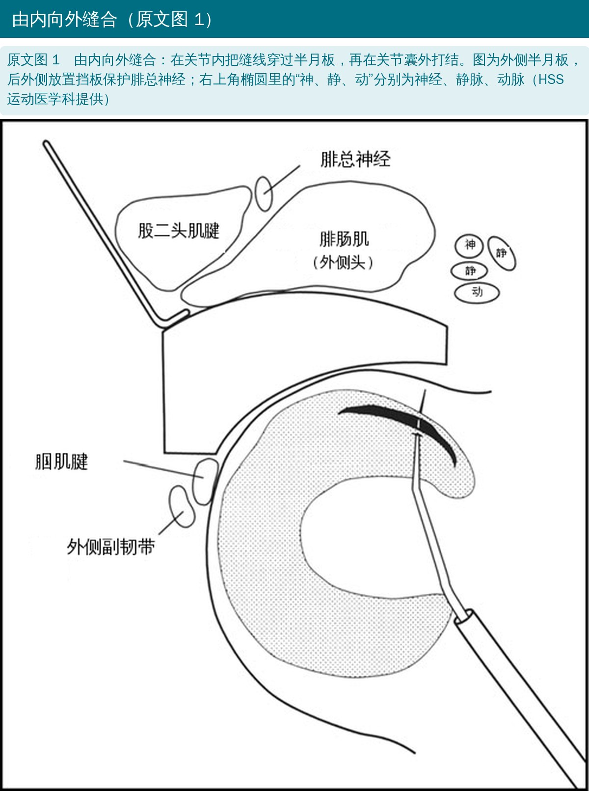
🔖原文图 1（图内英文已换成中文）
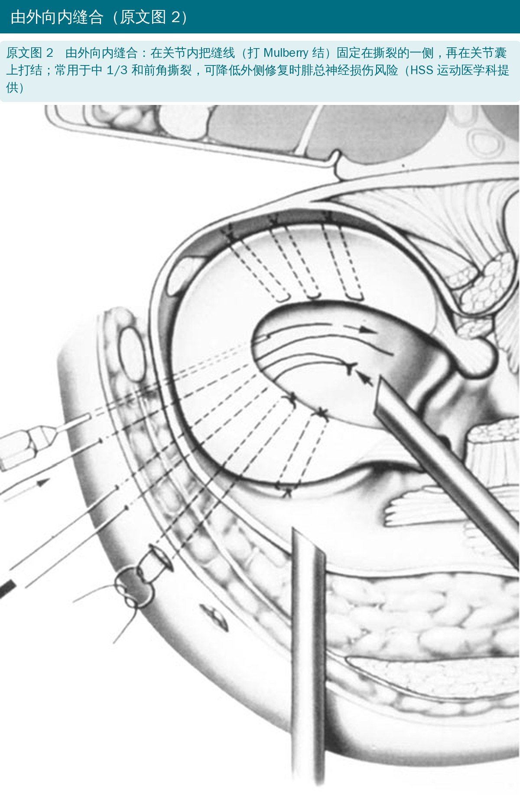
🔖原文图 2（线稿内无文字，图注由编者翻译）
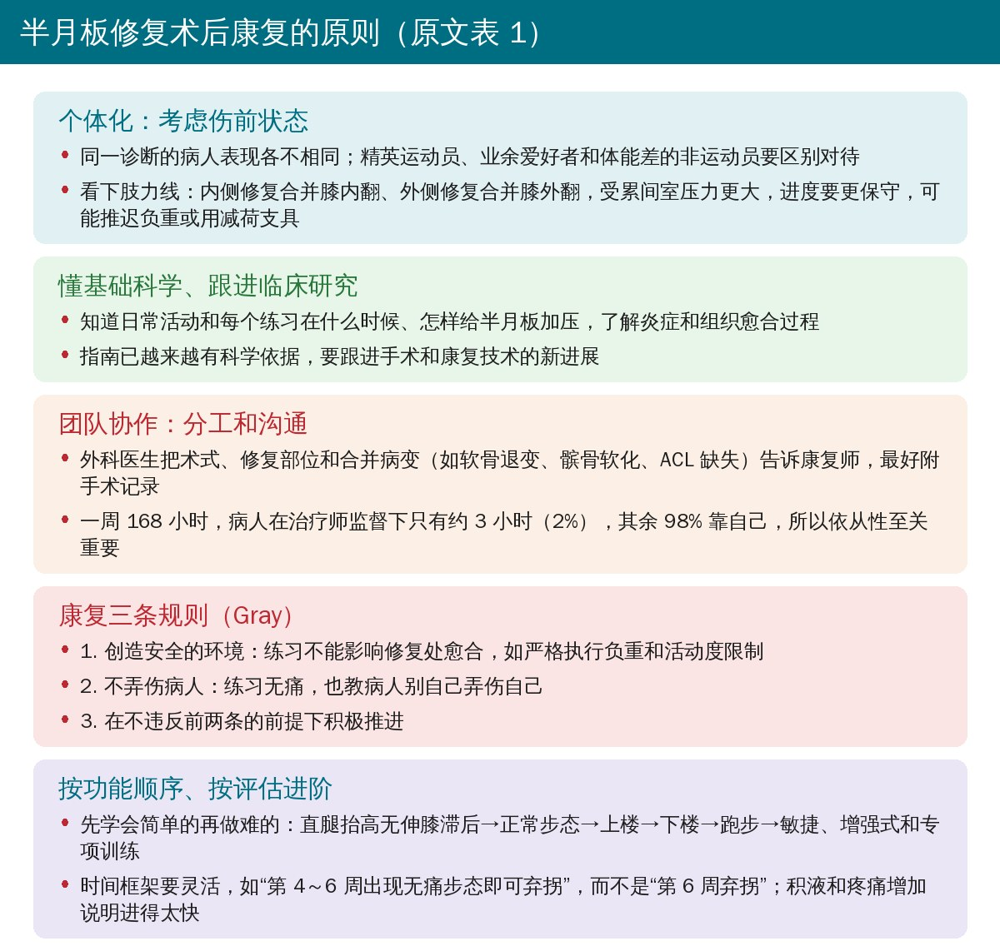
🔖原文表 1（编者翻译重排并补充正文要点）
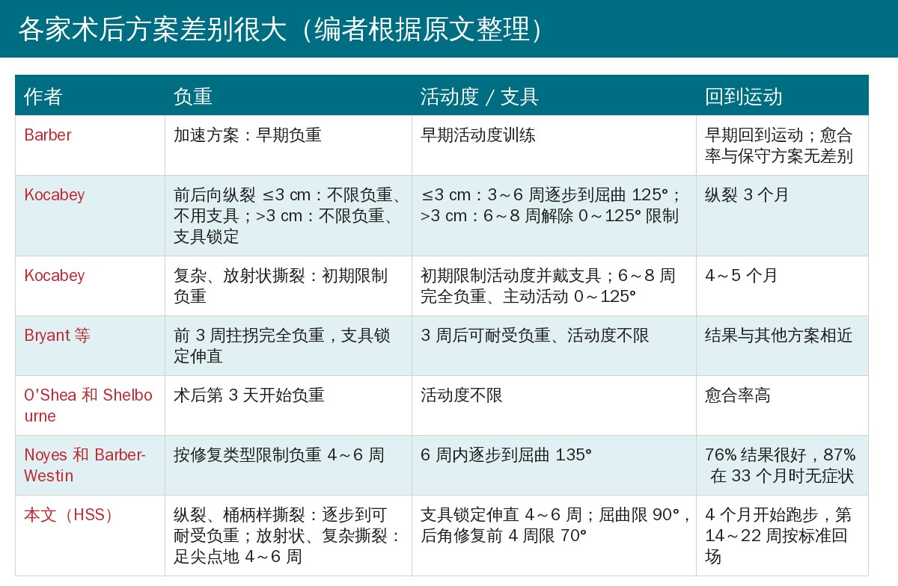
🔖编者根据原文整理
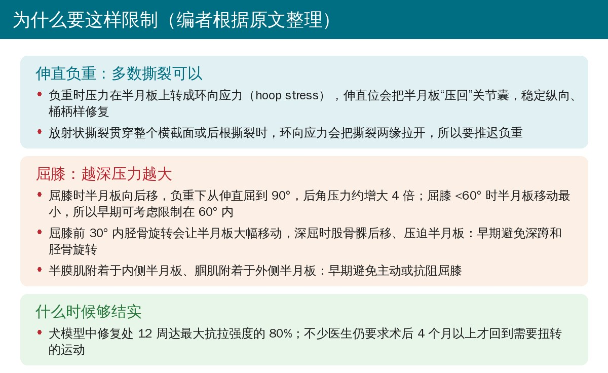
🔖编者根据原文整理
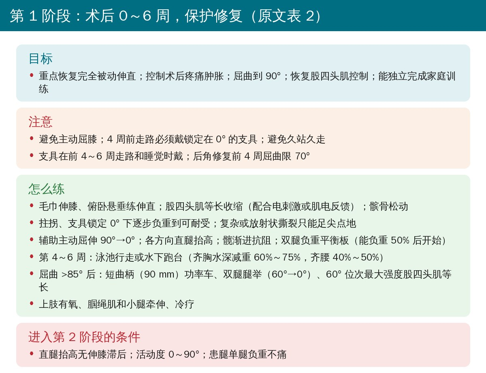
🔖原文表 2（编者翻译重排）
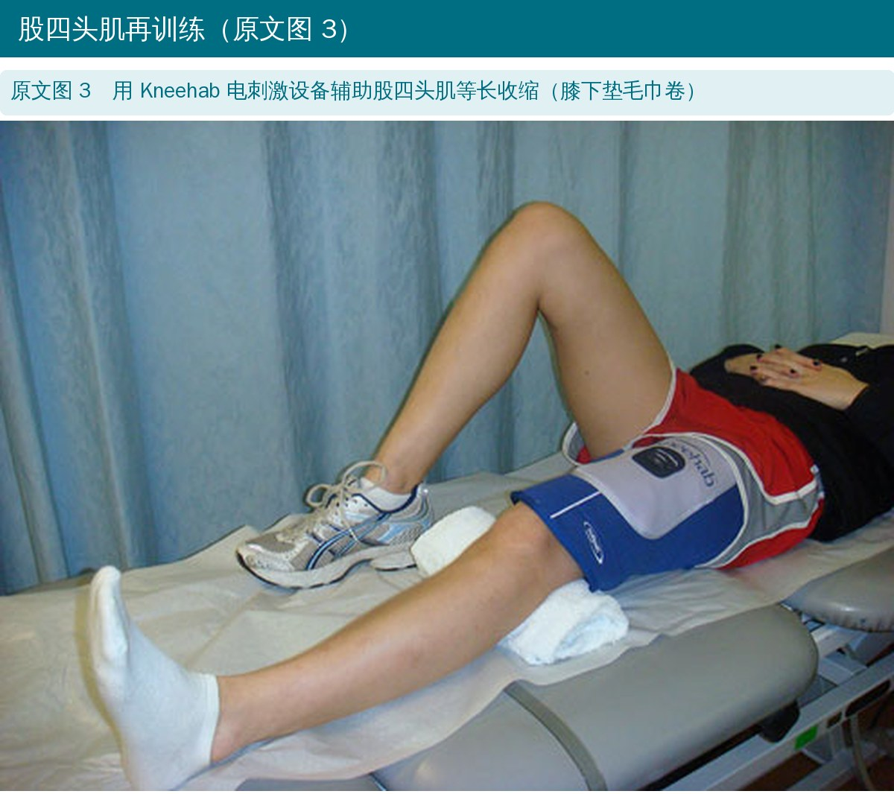
🔖原文图 3（照片内无文字，图注由编者翻译）
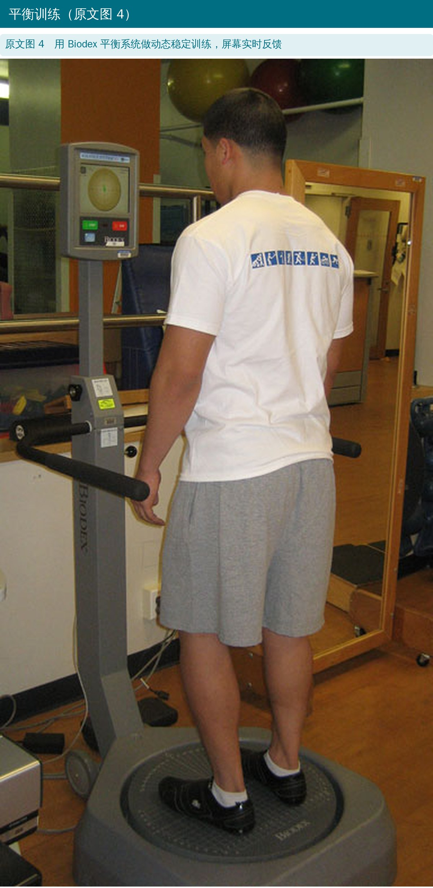
🔖原文图 4（照片内无文字，图注由编者翻译）
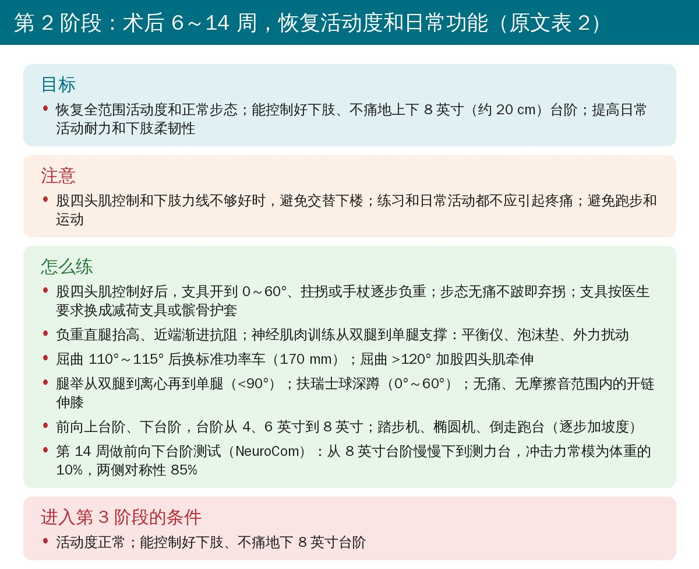
🔖原文表 2（编者翻译重排）
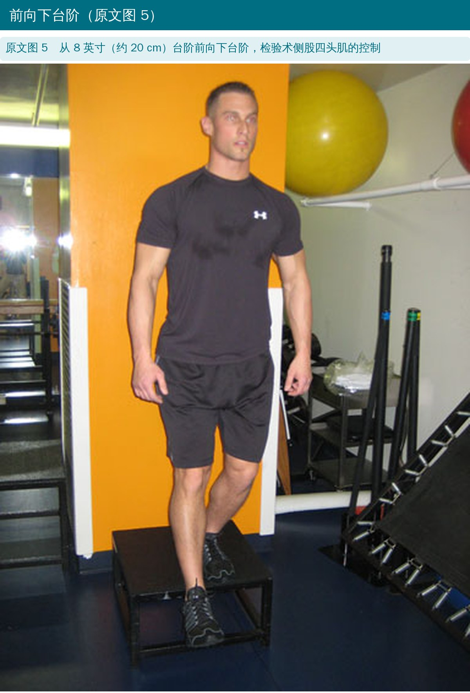
🔖原文图 5（照片内无文字，图注由编者翻译）
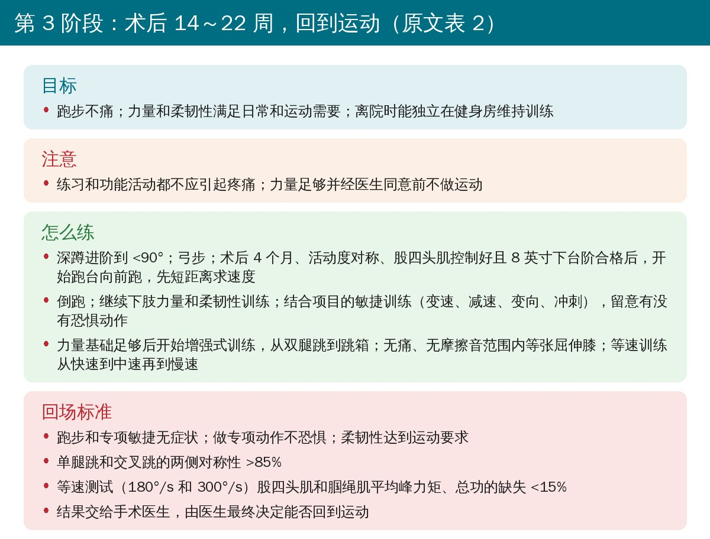
🔖原文表 2（编者翻译重排）
• 过去 30 年基础科学和关节镜技术的进步，让很多原本“修不了”的半月板可以修
• 康复要个体化、按标准进阶：先保护，再恢复活动度和日常功能，最后回到运动；判断依据是疼痛、积液、肌力和功能测试，而不是固定日期
• 病人自己的依从性和活动调整至关重要；具体做法还需要更多实验室和临床结局研究来证实
• 这是一篇叙述性综述：没有系统检索，HSS 指南是机构经验，作者没有给出按这套指南康复的病人结局数据
• 关键依据多来自生物力学和动物研究：屈膝 60° 内半月板移动最小、负重屈膝后角压力增大约 4 倍、修复 12 周达 80% 强度（犬模型），都是推理“为什么要限制”，不是比较不同方案的临床研究
• 原文引用的临床研究反而提示限制可以放宽：Barber 报告加速方案与保守方案愈合率无差别，O'Shea 和 Shelbourne 术后第 3 天即开始负重、活动度不限，愈合率也很高；HSS 方案在其中偏保守
• 回场标准有一定依据：单腿跳、交叉跳对称性 >85%、等速力量缺失 <15% 是常用的功能标准，但用于半月板修复后能否降低再撕裂，原文没有数据
• 2012 年以后的进展：之后又有多篇比较限制与加速康复的研究和系统综述，可作补充（编者观点）
• 早期屈膝限制不一致：正文说“早期可考虑把屈膝限制在 60°”，第 1 阶段指南却写屈曲到 90°（后角修复前 4 周 70°）；支具在走路时又是开到 60°
• 支具锁定时间：正文说支具锁定伸直用 4～6 周，表 2 的注意事项写“4 周前走路必须锁定在 0°”
• 换功率车的角度：正文写屈曲 110°～115° 就换标准功率车，表 2 写的是屈曲 >115°
• 跑步顺序：正文写倒跑之前先做向前跑（Retrograde running is preceded by forward running），表 2 却把“倒跑”列在“开始向前跑”之前
• “屈膝 90°”写成“伸直 90°”：原文写半月板在“90° of extension”时承担约 85% 的负荷，应为屈膝 90°
• 表 2 续表标题错误：第 2、3 阶段的续表表头都印成了“Phase I (Week 0-6)”
• 引用错误：最后一句“由手术医生最终决定能否回到运动”引用的 [88] 是一篇半月板移动的生物力学研究；第 10 篇参考文献作者 Hargreaves 被印成 Gardreanes
• 笔误：heal-toe（应为 heel-toe）、Shellbourne（Shelbourne）、transactions（transections）、irrapairable（irreparable）、Malvem（Malvern）、ctive-Assisted（Active-Assisted）
• 先拿到手术记录：撕裂类型（纵裂 / 桶柄样 vs 放射状 / 复杂 / 后根）和部位直接决定负重和屈膝限制
• 纵裂、桶柄样：可在支具锁定伸直下逐步负重；放射状、复杂、后根：早期足尖点地，因为负重产生的环向应力会把裂口拉开
• 早期避开三件事：负重下深屈膝、胫骨旋转、主动或抗阻屈膝；同时尽早练伸直、股四头肌和髋
• 按标准而不是按日子推进：直腿抬高无滞后、无痛单腿负重、8 英寸下台阶控制、跳跃和等速对称性 >85%
• 方案松紧可以商量：已有研究提示加速康复不一定影响愈合，具体松紧应与手术医生沟通，结合修复质量和病人情况决定（编者观点）
欢迎关注悦美力公众号，获取更多物理治疗的专业知识！
📄参考文献：
Cavanaugh JT, Killian SE. Rehabilitation following meniscal repair. Curr Rev Musculoskelet Med. 2012;5(1):46-58. doi:10.1007/s12178-011-9110-y（PubMed Central：PMC3535118）
本文为中文解读，仅作学术交流：原文图 1～图 5 引自原文，其中图 1 的英文标注由编者替换为中文；表 1、表 2 由编者翻译重排，方案对照和生物力学卡为编者根据原文整理。原文版权归 Springer Science+Business Media 所有，图 1、图 2 由 HSS 运动医学科提供。